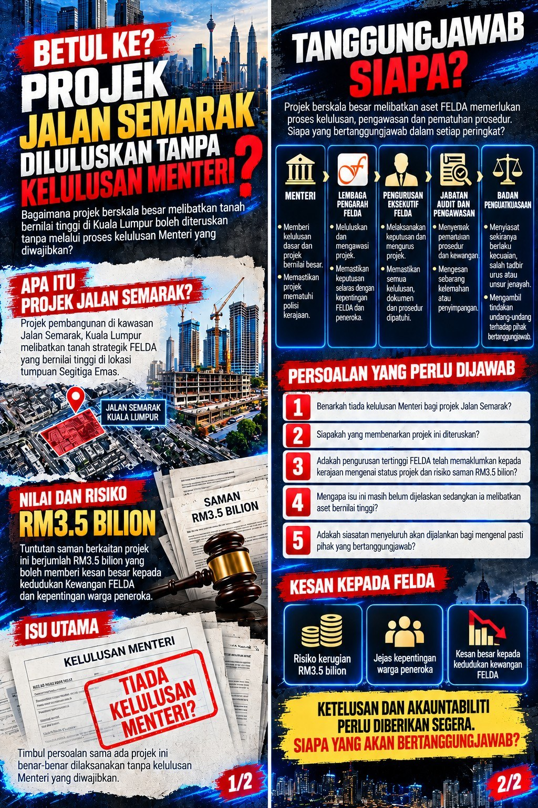

BETUL KE PROJEK JALAN SEMARAK DILULUSKAN TANPA KELULUSAN MENTERI? SIAPA SEBENARNYA BERTANGGUNGJAWAB?

Persoalan mengenai status kelulusan Menteri bagi projek pembangunan Jalan Semarak yang melibatkan aset bernilai tinggi FELDA perlu diberikan penjelasan segera.
Persoalan mengenai status kelulusan Menteri bagi projek pembangunan Jalan Semarak yang melibatkan aset bernilai tinggi FELDA perlu diberikan penjelasan segera.
Benarkah projek berkenaan diteruskan tanpa kelulusan Menteri? Jika benar, bagaimana projek berskala besar yang melibatkan tanah strategik di Kuala Lumpur itu boleh dilaksanakan tanpa melalui proses kelulusan yang sewajarnya?
Siapakah pihak yang bertanggungjawab membuat keputusan, menguruskan dokumentasi dan memastikan segala prosedur dipatuhi?
Dalam masa sama, bagaimana pula dengan tuntutan saman RM3.5 bilion yang dikaitkan dengan isu Jalan Semarak? Adakah FELDA berisiko menanggung kerugian besar akibat kelemahan tadbir urus atau kegagalan mematuhi prosedur?
Persoalan yang perlu dijawab
- Benarkah tiada kelulusan Menteri bagi projek pembangunan Jalan Semarak, dan apakah bukti atau dokumen rasmi yang boleh mengesahkan perkara itu?
- Jika tiada kelulusan Menteri, siapakah yang membenarkan projek berkenaan diteruskan dan atas dasar kuasa apakah keputusan itu dibuat?
- Adakah pihak pengurusan tertinggi FELDA telah memaklumkan sepenuhnya kepada kepimpinan kerajaan mengenai status kelulusan projek dan risiko tuntutan saman RM3.5 bilion?
- Mengapa isu kelulusan ini masih memerlukan penjelasan, sedangkan ia melibatkan aset dan kepentingan kewangan FELDA yang begitu besar?
- Adakah kerajaan akan mengarahkan siasatan menyeluruh bagi mengenal pasti pihak yang bertanggungjawab sekiranya berlaku pelanggaran prosedur atau kecuaian?
Tadbir urus dan akauntabiliti
Adakah pertukaran Pengerusi FELDA mampu menyelesaikan persoalan ini, atau adakah perkara yang lebih besar mengenai tadbir urus dan akauntabiliti masih belum didedahkan?
Warga peneroka dan generasi anak FELDA berhak mengetahui perkara sebenar. Ketelusan mengenai kelulusan Menteri, keputusan pengurusan dan kedudukan tuntutan saman RM3.5 bilion amat penting bagi memastikan kepentingan FELDA terus dilindungi.